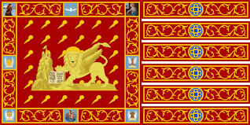
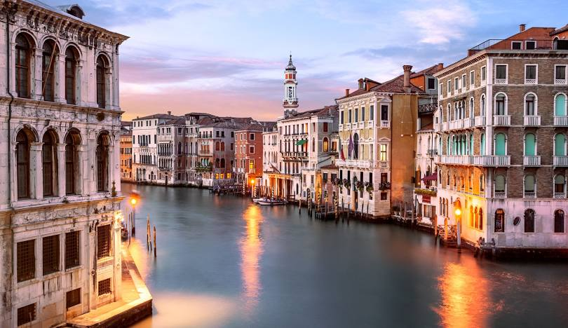
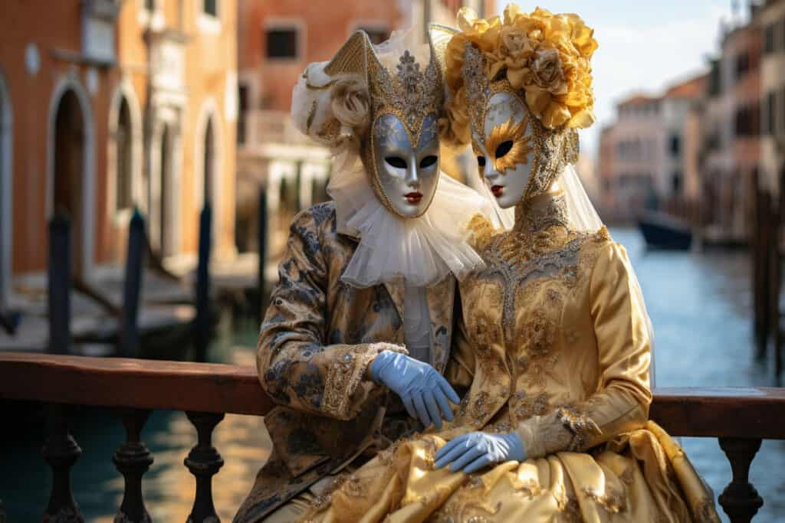
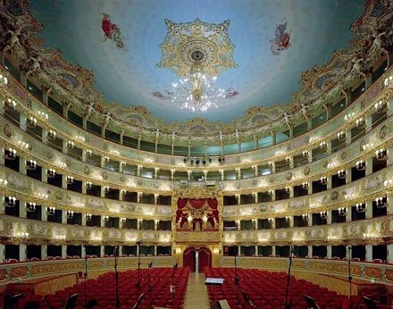

ונציה- פנינת הלגונה
תפריט
ונציה: סיפורה של עיר ייחודית על המים
ונציה, השוכנת בצפון-מזרח איטליה בלב לגונה רחבת ידיים, היא עיר יוצאת דופן הבנויה על 118 איים קטנים המקושרים באמצעות רשת מורכבת של למעלה מ-400 גשרים ומאות תעלות, בהן כלי התחבורה העיקריים הם סירות וגונדולות. ראשיתה של העיר במאה ה-5 לספירה כמרכז מקלט לפליטים, היא צמחה והפכה לאחת הרפובליקות הימיות החזקות והמשפיעות ביותר באירופה, ששלטה בנתיבי סחר ימיים והייתה גשר בין תרבויות המזרח והמערב. בתקופת הרנסאנס, ונציה פרחה כמרכז אמנות, אדריכלות ומוזיקה, והותירה אחריה מורשת תרבותית עשירה. כיום, שטחה הכולל של ונציה (כולל היבשה והלגונה) הוא כ-414 קמ"ר, ואוכלוסייתה הכוללת מונה כ-260 אלף נפש. העיר ההיסטורית עצמה, על אף יופייה הייחודי וקסמה התיירותי העצום, ניצבת בפני אתגרים משמעותיים כגון שימור מבניה העתיקים, התמודדות עם תופעת "אקווה אלטה" (גאות גבוהה) וניהול זרם התיירים ההולך וגובר, תוך ניסיון לשמור על קהילה מקומית תוססת.

אדריכלות ופלאי העיר הבנויה על המים
ונציה היא עיר של פלאים ארכיטקטוניים ונופים עוצרי נשימה, המציעה למבקרים חוויה ייחודית במינה. הטיול מתחיל בכיכר סן מרקו, הכיכר המרכזית בעיר, מרחב ציבורי אלגנטי המוקף במבנים מרהיבים ושופעי היסטוריה. נמשיך בשייט לאורך התעלה הגדולה, עורק המים המרכזי של העיר החושף שורה מרשימה של ארמונות אצילים בסגנונות אדריכליים שונים, כל אחד מספר את סיפורה של משפחה ונציאנית עשירה. מעבר על פני גשר ריאלטו המפורסם הינו דבר שאסור לפספס, ניתן גם לעבור מתחתיו בעת שייט רומנטי בגונדולה. גשר האנחות, על אף שמו וסיפורו המלנכולי, מציע נקודת צילום יפהפייה. תצפית ממגדל הפעמונים של סן ג'ורג'ו מג'ורה מספקת מבט פנורמי מרהיב על כל הלגונה והעיר הפרושה למטה. ביקור בבית האופרה לה פניצ'ה מומלץ במיוחד, שכן הוא אחד המבנים המפוארים והקסומים שיש לונציה להציע. כל אחד מהאתרים הללו טומן בחובו היסטוריה, אמנות וקסם ונציאני אותנטי.

תרבות ומסורות עתיקות יומין
התרבות והמסורות של ונציה הן שילוב ייחודי של היסטוריה עשירה, מיקום גיאוגרפי מיוחד וחגיגות ססגוניות. הקרנבל הוונציאני, הנחגג מדי שנה בחודש פברואר, הוא אחד הפסטיבלים המפורסמים בעולם, המושך אליו אלפי אנשים בתלבושות מפוארות ומסכות מסתוריות, המשמרות מסורת עתיקה של הסתרת זהויות ושחרור חברתי. בנוסף, פסטיבל הסרטים הבינלאומי של ונציה המתרחש מדי שנה הוא אחד האירועים המתוקשרים והמסוגננים בעיר. יתר על כן, הביאנלה של ונציה הינו מוסד תרבות רב-תחומי יוקרתי המארגן תערוכות בינלאומיות חשובות במגוון תחומים אמנותיים. יתרה מכך, הגונדולה, מעבר להיותה כלי תחבורה, היא סמל רומנטי ואייקוני של העיר, והגונדוליירים משמרים מסורת של שירה וסיפורים. החגים הדתיים והאירועים המקומיים הרבים לאורך השנה מוסיפים נדבך נוסף לעושר התרבותי של ונציה, המשמרת בגאווה את עברה.

גלריית כרטיסיות
התעלה הגדולה
התעלה המרכזית בונציה

גשר ריאלטו
סמל אדריכלי מעל התעלה הגדולה

כיכר סן מרקו
הכיכר המרכזית בונציה

ארמון הדוג'ה
סמל עוצמתה ההיסטורית של ונציה

ארמון פאלאצו דוקאלה
ארמון שליטי ונציה

תיאטרון לה פניצ'ה
בית האופרה המפואר של ונציה

קרנבל המסכות של ונציה
חגיגה ססגונית של תרבות ואחווה

הביאנלה של ונציה
תערוכה בנלאומית של אמנות ואדריכלות

פסטיבל הסרטים של ונציה
חגיגה שנתית של קולנוע עולמי